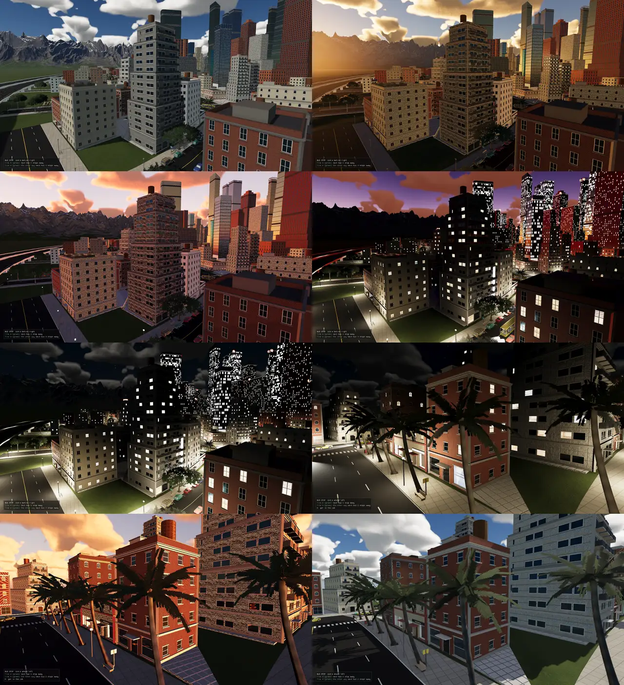
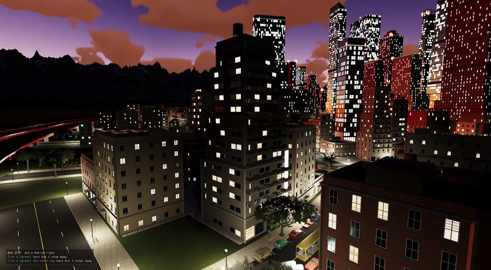
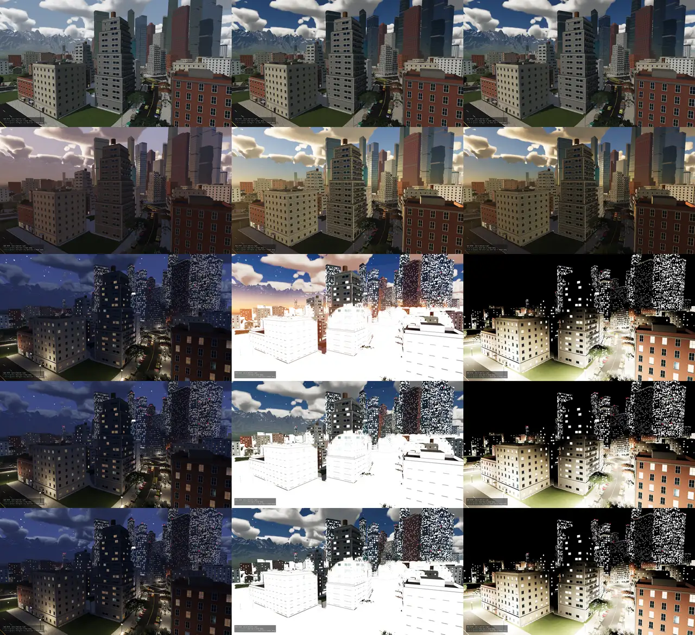
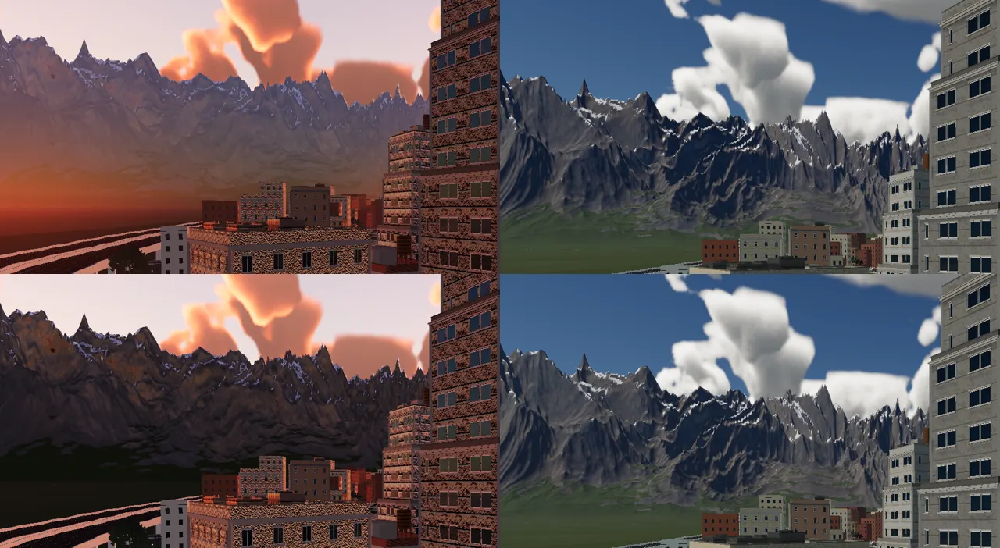
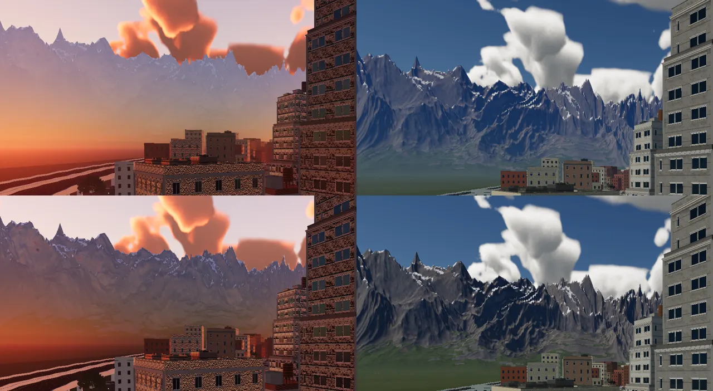
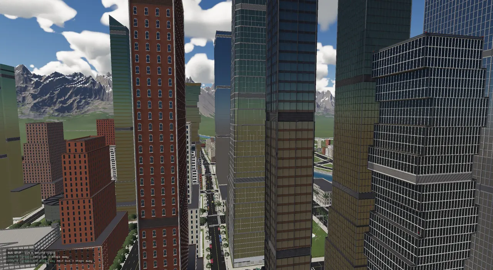
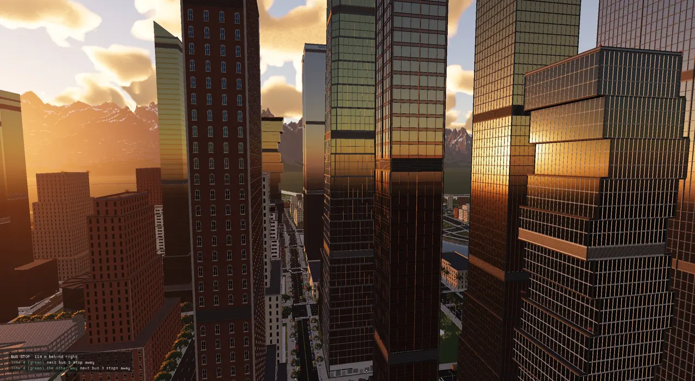

Behind RT_SKY=physical, the Vulkan renderer draws the sky from a model of real air:
Rayleigh, Mie and ozone over a round planet, solved once on the CPU into two small tables and marched again on the
GPU every frame. Everything is in one set of physical light units. A camera that measures each frame and adapts
its exposure carries those units from a 100,000 lux noon to a moonlit street. The one idea is that the sky, the
light the sky throws on surfaces, the haze in front of a mountain and the colour of the sun are all one model,
read in different ways.

Until November 2026 the Vulkan sky was a palette: day_night_cycle.cpp held hand-picked
zenith, horizon and ground colours for each hour, and sky.frag blended them with a sun disc and a
glow. It looked fine at noon. It could not do a real golden hour or the Earth's shadow rising at dusk, and
nothing linked the sky's colour to the sun's colour on a wall. Metal had a Hillaire-style scattering sky, but it
was opt-in per level, tuned to the old exposure, used a uniform stand-in for multiple scattering and had no test
(ADR-0367's context).
A physical sky also brings a second problem. Real light spans about 16 stops between noon and moonlight
(ADR-0366). A fixed exposure cannot cover that. The old engine faked night by multiplying the exposure up to
×6 at midnight (kNightAdapt), and every lamp, window and sign had been tuned against that lift.
ADR-0366 measured the result: the night emitters were about 500× brighter than real. So the work came as a chain,
each step forcing the next:
| ADR | Step | What it left for the next step |
|---|---|---|
| 0366 | Engine light units; the scene pre-exposed | units and headroom in place; the sky itself still a palette |
| 0367 | The physical sky, CPU model first, GPU sky view | an incident light meter exposes a night street for its moonlight and every lamp blows out |
| 0368 | Auto exposure from the frame's histogram | the eye adapted to emitters tuned 500× too bright, so dusk looked like day |
| 0369 | Lights at real candela, glows into units, clouds lit from their height | far mountains glowed: the haze treated the air as uniform |
| 0370 | The aerial perspective volume | a rough surface's sky light was one direction's radiance, not the sky's integral |
| 0371 | The sky as a cubemap and as spherical harmonics; the renderer validation-clean | then the local reflection probes (ADR-0372 onward, reflections) |
All six landed on 2026-11-07, in four commits (57ee888b, 2d006311,
8a8693a4, 7459752b). The physical sky is still off by default at the pinned
commit: DayNightSystem turns it on only when the environment variable RT_SKY is
physical. ADR-0369's "still owed" list says why: the lit windows still clip at night and the stars are
not in real units yet. Once they are, physical becomes the default and the palette goes.
A physical sky needs physical numbers, but the engine already had a lighting scale that worked by day. ADR-0366 picked a unit that keeps it: one engine light unit is 20,000 lux of illuminance (light falling on a surface), or 20,000 cd/m² of luminance (how bright a surface looks). The cycle's noon sun was already 5 units, so it is now 100,000 lux, which is clear-day sunlight at the ground. And a level's typical exposure of 0.7 works out to EV100 14.5, a camera in daylight ("sunny 16" is EV 15). Daytime was nearly physical already. Night was the part that was wrong.
// ENGINE LIGHT UNITS (ADR-0366): an illuminance of one unit is this many lux, a luminance of one unit this many cd/m^2. // Chosen so the cycle's noon sun (5 units) is 100,000 lux -- clear-day sunlight at the ground -- and a level's typical // exposure of 0.7 is EV100 14.5, a camera in daylight. constexpr double kLuxPerUnit = 20000.0; // The sun's illuminance above the atmosphere (the solar constant in lux), and the full moon's (it is lit by the sun: // its albedo ~0.12, so about 2.5e-6 of the sun's): times the transmittance on the way down. constexpr double kSunTopLux = 128000.0; constexpr double kFullMoonTopLux = 0.32; struct Atmosphere { double groundRadius = 6360000.0, topRadius = 6460000.0; // m Vec3 rayleighScatter{5.802e-6, 13.558e-6, 33.1e-6}; // /m at sea level double rayleighHeight = 8000.0; double mieScatter = 3.996e-6, mieExtinction = 4.40e-6; // /m double mieHeight = 1200.0, mieG = 0.8; Vec3 ozoneAbsorb{0.650e-6, 1.881e-6, 0.085e-6}; // /m at the layer's peak (25 km, 15 km either side) Vec3 groundAlbedo{0.3, 0.3, 0.3}; double multiScatter = 1.0; // scales the multiple-scattering term (1: the model's own) };
Two numbers anchor everything else. kSunTopLux is the sun above the atmosphere (the solar
constant in lux, 128,000). kFullMoonTopLux is the full moon's, 0.32 lux: the moon is lit by the sun,
with an albedo of about 0.12. The model gives radiance per unit of illuminance at the top of the air, so the
same tables serve both lights. Multiply by 6.4 units (128,000 / 20,000) for the sun, or by the moon's
0.32 × its lit fraction / 20,000 for the moon.
| Thing | Real value | Engine units | Where it is set |
|---|---|---|---|
| Sun above the air | 128,000 lux | 6.4 | kSunTopLux |
| Noon sun on the ground (test) | ~103,000 lux | ~5.2 | ADR-0367, test_sky_atmosphere |
| Blue zenith at noon | ~1,950 cd/m² | ~0.1 | ADR-0367 |
| Sky light on the ground at noon | ~9,000 lux | ~0.45 | ADR-0367 |
| Zenith with the sun 4° down | ~13 cd/m² | 6.5e-4 | ADR-0367 |
| The moon's disc | 2,500 cd/m² | 0.125 | lights.lua moon_nits |
| A lit window pane | 25 cd/m² | 1.25e-3 | lights.lua glows |
| The city's glow on the sky | 2 cd/m² | 1e-4 | lights.lua city_glow_nits |
| The natural night sky's floor | ~2e-4 cd/m² | 1e-8 | sky_physical.glsl |
The span the renderer has to hold: from 6.4 units to 1e-8, about 29 stops of radiance in one frame format. That is what pre-exposure is for.
The HDR targets are fp16. Half floats keep about three decimal digits and run out above 65,504 and (as
normal numbers) below about 6e-5, and the table above runs to 1e-8. Exposed in the composite, as it used to be, a
night scene would be stored as numbers fp16 handles badly and only then multiplied up. ADR-0366 moved the
exposure to the front: mesh.frag, sky.frag and the clouds multiply their radiance by
the camera's exposure as they draw it, so the HDR image always holds values near 1. The exposure rides
GlobalsUBO::cameraPosition.w, a slot that was unused before. The composite then exposes by 1.
Bloom's threshold and knee are scaled into pre-exposed units, and the underwater view, the ray-traced reflections
and the cloud grain blur's low-light test read the same cameraPosition.w.
Proved equal before it was used. ADR-0366 compared river_town at 22:00 and at
noon, old order against new (RT_PREEXPOSE=0 keeps the old one). The image means matched: 43.3/43.3,
82.3/82.3, 45.5/45.7, 37.1/37.0. The only differing pixels were palm fronds moving in the wind.
The model is split by cost. The expensive and slowly changing parts (the tables, the sun's colour at the camera, the sky's total light on a surface) are computed on the CPU, rarely. The parts that depend on the view (the dome in every direction, the air in front of every pixel) are marched on the GPU, every frame, from the CPU's tables. Because both sides read the same two tables and the same medium, they cannot drift apart. The header says it plainly: "so both sides are one model".
The two halves. Solid arrows are data passed on; the dashed lines on the right are the sky view and the cube going to their readers. The tables go up once per level; the frame's numbers go up every frame in the globals block that every scene shader includes.
The model is Sébastien Hillaire's, from "A Scalable and Production Ready Sky and Atmosphere Rendering Technique"
(Eurographics Symposium on Rendering, 2020), with the transmittance table laid out as Eric Bruneton and Fabrice
Neyret's "Precomputed Atmospheric Scattering" (2008) does it. Both are credited in CREDITS.md under
"Methods named in the code". The air is three things over a planet of 6,360 km radius, in a 100 km shell:
rayleighScatter vector), thins out exponentially with an 8 km scale height, and is why the sky is
blue and the sunset red.mieG = 0.8, which makes the bright
aureole round the sun. A level's turbidity multiplies it.ozoneAbsorb vector),
so it matters most on the long, low paths of twilight.The transmittance table answers "what fraction of the light gets through the air from this height, in this direction, to the top?". It is indexed by the radius r and the cosine of the view's zenith angle μ, using Bruneton's mapping, which spends its texels near the horizon where the answer changes fastest. Each of its 256 × 64 texels is a 40-step march of the extinction. A ray that hits the ground gets zero: that is the planet's shadow, and the reason a mountain range or a cloud deck can still be sunlit after the street is not.
The multiple-scattering table is Hillaire's main trick. Light that scatters once (sun → air → eye) is cheap to march. Light that scatters two, three or more times is what keeps a twilight sky bright and fills shadows with blue. Hillaire's observation: at a given height and sun angle, the light arriving from the second bounce on is close to the same from every direction. So for each of 32 × 32 (height, sun cosine) cells the table marches 64 directions once, gathering G, the second-order light, and f, the fraction the surroundings scatter back. The infinite series of higher orders is then a geometric series: G / (1 − f).
// MULTIPLE SCATTERING (Hillaire 2020, sec. 5.5): at each (height, sun cosine), the second-order light arriving from // every direction (isotropic phase) and the fraction f of light the surroundings scatter back; the infinite series // of higher orders sums to G / (1 - f) // ... for (int d = 0; d < dirs; ++d) { const Vec3 w = fibonacciDir(d, dirs); const double tg = distToGround(r, w.y, rg); const double tMax = tg > 0.0 ? tg : distToTop(r, w.y, rt); const double ds = tMax / steps; Vec3 T(1, 1, 1), L(0, 0, 0), f(0, 0, 0); for (int i = 0; i < steps; ++i) { const Vec3 p = x0 + w * ((i + 0.5) * ds); const double rp = p.length(); const Medium m = mediumAt(a, std::max(rp - rg, 0.0)); const Vec3 sigS = m.rayleigh + Vec3(m.mie, m.mie, m.mie); const Vec3 Ts = sampleTransmittance(out, rp, dot(p * (1.0 / rp), sun)); const Vec3 stepT = expV(m.extinction * -ds); const Vec3 S = mulV(sigS, Ts) * iso; const Vec3 one(1, 1, 1); L = L + mulV(T, divV(mulV(S, one - stepT), m.extinction)); f = f + mulV(T, divV(mulV(sigS, one - stepT), m.extinction)); T = mulV(T, stepT); } // ... G = G + L * (1.0 / dirs); F = F + f * (iso * 4.0 * PI / dirs); } const Vec3 psi(G.x / std::max(1e-6, 1.0 - F.x) * a.multiScatter, G.y / std::max(1e-6, 1.0 - F.y) * a.multiScatter, G.z / std::max(1e-6, 1.0 - F.z) * a.multiScatter);
Each step of the march uses the analytic integral of a constant medium over the step,
S × (1 − e−σΔs) / σ, rather than S × Δs. With only 20 or 32 steps along
100 km of air, that is what keeps a thick step from over-counting.
atmosphereSkyRadiance marches a view ray from the camera's height. At each step it takes the
sunlight that reached that point (the transmittance table), scatters it toward the eye by the Rayleigh and Mie
phase functions (single scattering), adds the multiple-scattering table's term, and thins everything behind it.
A ray that meets the ground adds the ground's lit albedo (0.3 grey by default).
for (int i = 0; i < steps; ++i) {
const Vec3 p = x0 + view * ((i + 0.5) * ds);
const double rp = p.length();
const Medium m = mediumAt(a, std::max(rp - rg, 0.0));
const double muS = dot(p * (1.0 / rp), light);
const Vec3 Ts = sampleTransmittance(t, rp, muS);
const Vec3 single = mulV(Ts, m.rayleigh * phaseR + Vec3(m.mie, m.mie, m.mie) * phaseM);
const Vec3 multi = mulV(m.rayleigh + Vec3(m.mie, m.mie, m.mie), sampleMultiScatter(t, rp, muS));
const Vec3 S = single + multi;
const Vec3 stepT = expV(m.extinction * -ds);
L = L + mulV(T, divV(mulV(S, one - stepT), m.extinction));
T = mulV(T, stepT);
}
The CPU uses this march for a handful of readings, collected in a SkyReading: the light's own
colour and strength at the camera (the transmittance toward it, normalised to a max channel of 1, so the sun
turns orange-red at 2° up by itself), and the zenith, the horizon (eight directions 2° up, averaged), the ground
and the up-facing irradiance. DayNightSystem hands these to everything that used to read the
palette, so the 2D cloud overlay, the underwater view and the glass's room all read physical colours (ADR-0367).
The tests hold the CPU model to Earth. tests/test_sky_atmosphere.cpp: the
transmittance straight up matches the closed form (each layer's coefficient × its scale height; ozone's tent
integrates to 15 km); the tables match the exact march within 0.02-0.03; noon (sun 60° up) gives 80,000-120,000 lux
of sun on the ground, a zenith of 1,500-12,000 cd/m² and bluer than green than red, and 8,000-40,000 lux of sky
light; at sunset the sun's blue channel falls under half and the sky toward the sun is warm while the sky
opposite and higher stays blue; with the sun 4° down the zenith is still lit (over 0.5 cd/m², under 5% of noon),
and at 20° down it is under 1e-3 cd/m². The GPU is held to the CPU by construction: it is the same march on
the same tables.
The dome changes whenever the sun moves or the camera climbs, and it is read thousands of times per frame, so
the GPU keeps it as a texture rebuilt each frame. sky_view.comp fills a 192 × 108 RGBA16F image in
Hillaire's sky-view mapping. The horizon sits on the middle row. Above and below it a square-root warp crowds the rows toward
the horizon, where the colour changes fastest. The columns are the azimuth measured from the sun, also square-root warped so the sun's
side gets more of them, and only 0 to 180°: the sky is mirror-symmetric about the sun's vertical plane.
The sky-view mapping (the grid lines are illustrative). The horizon stays on the middle row at any height; what changes with the camera's height is the angle each half covers (from higher up the horizon dips).
Both lights go into the one texture. By day the active light is the sun and the "other" is the moon (and the reverse at night). The shader builds its frame round the active light and places the other one by its azimuth from it, so twilight and moonlight share the dome:
float azim = uv.x * uv.x * PI; // from the sun, mirrored float sz = sin(viewZenith); // in the LUT's frame the sun lies along +x at its height; the moon keeps its azimuth from the sun vec3 dir = vec3(sz * cos(azim), cos(viewZenith), sz * sin(azim)); vec3 sunH = vec3(pc.sun.x, 0.0, pc.sun.z); float sunHl = length(sunH); vec3 sun = vec3(sqrt(max(1.0 - pc.sun.y * pc.sun.y, 0.0)), pc.sun.y, 0.0); vec3 L = pc.sun.w > 0.0 ? march(r, dir, sun) * pc.sun.w : vec3(0.0); if (pc.moon.w > 0.0) { // the moon's direction in the sun's frame: its azimuth relative to the sun's vec3 mH = vec3(pc.moon.x, 0.0, pc.moon.z); float a = 0.0; if (sunHl > 1e-4 && length(mH) > 1e-4) { vec3 s = sunH / sunHl, m = mH / length(mH); a = atan(s.x * m.z - s.z * m.x, dot(s, m)); } float mh = sqrt(max(1.0 - pc.moon.y * pc.moon.y, 0.0)); vec3 moon = vec3(mh * cos(a), pc.moon.y, mh * sin(a)); L += march(r, dir, moon) * pc.moon.w; }
sky_physical.glsl is the reading side, included by sky.frag, mesh.frag,
the probes' relight and the ray pass. skyViewRadiance(dir) inverts the mapping. Just under the
horizon it blends back toward the horizon's own colour over about six degrees (0.1 rad): on a finite world that
band is distant land and should read as haze, not soil (the Metal scattering sky's rule). And it adds a floor of
1e-8 units, about 2e-4 cd/m², the natural night sky's airglow and starlight, so the sky is never exactly black.
The real sun's disc is about 1.6e9 cd/m² at noon. Pre-exposed by 0.7 that is still far beyond fp16's 65,504,
so skyLightDisc keeps the physics but caps it: the disc's radiance is its illuminance over its solid
angle, reddened by the transmittance toward it, held to at most 2,000 × the light above the air. That is bright
enough to bloom and no brighter (the Metal sky's "artistic disc"). Two power lobes add the aureole.
// The active light's disc, reddened and dimmed by the air on the way, with its aureole: radiance (units). The sun's // disc is ~1.6e9 cd/m^2 at noon; kept as it is, pre-exposed it would overflow fp16, so it is held to a bright that // blooms (the Metal sky's rule: an "artistic disc"). vec3 skyLightDisc(vec3 dir) { float top = g.skyPhysical.z; if (top <= 0.0 || g.skyPhysical3.x < 0.5) return vec3(0.0); // (the moon draws as itself: sky.frag moonDisc) vec3 t = skyTransmittanceToward(dir.y); float cosL = dot(dir, g.skySunDir.xyz); float discCos = g.skyPhysical.w; float disc = smoothstep(discCos - 0.0002, discCos, cosL) * g.skyPhysical2.x; // the real disc's radiance over its solid angle (2 pi (1 - cos r)), capped at 2000x the top illuminance float solid = max(6.2831853 * (1.0 - discCos), 1e-6); vec3 col = t * top * min(1.0 / solid, 2000.0) * disc; float c2 = clamp(cosL, 0.0, 1.0); col += t * top * (pow(c2, 4000.0) * 0.5 + pow(c2, 250.0) * 0.02) * g.skyPhysical2.x; return col;
Only the sun draws this way. The moon keeps sky.frag's phased disc (a sphere lit from the true sun,
so the crescent faces it) and the stars keep their procedural field on the celestial sphere. Both are older than
the physical sky and were tuned at the ×6 night exposure. They are scaled into units by
skyPhysical3.y (celestialScale, 1e-5, "interim"), and the moon's disc intensity is then
set so it comes out at its real 2,500 cd/m² through the air (ADR-0369). The city's light-pollution glow is
scaled by skyPhysical3.w to peak at 2 cd/m².
void main() {
vec3 dir = normalize(inViewDir);
vec3 col;
if (g.counts.z == 1) {
col = sampleEquirect(dir); // HDR environment background (no clouds)
} else if (skyIsPhysical()) {
// THE PHYSICAL SKY (ADR-0367): the dome, the sun's disc through the air, and the night's bodies over it
col = skyViewRadiance(dir) + skyLightDisc(dir);
col += (starField(dir) + moonDisc(dir)) * g.skyPhysical3.y + skyGlow(dir) * g.skyPhysical3.w;
col = applyClouds(col, dir);
} else {
col = sampleEnvironment(dir);
col = applyClouds(col, dir);
}
outColor = vec4(col * g.cameraPosition.w, 1.0); // pre-exposed (ADR-0366)
}

DayNightCycle is the clock and the astronomy. From the hour, the calendar day (172 is June 21) and
the latitude (40° N by default) it gives the sun's direction (hour angle round the celestial pole, tilted by the
latitude, offset by the declination), the moon's direction, age and lit fraction, and the celestial frame the stars
are drawn on. DayNightSystem::applyLighting turns that into the frame's SceneLighting
every frame, and with RT_SKY=physical it then calls applyPhysicalSky, which replaces the
palette's numbers with the model's.
if (!skyTablesBuilt_) {
buildAtmosphereTables(atmosphereFrom(lit.skyScattering), skyTables_);
ctx.renderer.setSkyTables(skyTables_.transmittance.data(), AtmosphereTables::kTransW, AtmosphereTables::kTransH,
skyTables_.multiScatter.data(), AtmosphereTables::kMsW, AtmosphereTables::kMsH);
skyTablesBuilt_ = true;
}
const double height = std::max(0.0, ctx.view.camera.position.y);
const double sunTop = kSunTopLux / kLuxPerUnit;
const float moonTop = static_cast<float>(kFullMoonTopLux * st.moonIllumination / kLuxPerUnit);
if ((st.sunDirection - readSunDir_).length() > 0.002 || std::fabs(height - readHeight_) > 50.0) {
sunReading_ = readSky(skyTables_, height, st.sunDirection, sunTop);
atmosphereIrradianceSH(skyTables_, height, st.sunDirection, sunTop, sunSH_);
// ...
// the active light: whichever lights the ground more (the moon only once the sun is down)
const double sunGround = sunReading_.lightIntensity * std::max(0.0, st.sunDirection.y);
const double moonGround = moonReading_.lightIntensity * std::max(0.0, st.moonDirection.y);
const bool sunActive = sunGround >= moonGround;
Three things to notice. The tables are built once per level, from the level's scattering parameters, and
uploaded once. The readings and the harmonics are taken again only when the sun moves by more than 0.002 (in
direction) or the camera climbs by more than 50 m, not every frame. And the active light (the one SceneLighting::sun carries, which casts
the shadows) is whichever of the sun and the moon puts more light on level ground. It switches to the moon only
once the sun is well down; both are near-black at the crossover, so nothing pops (the cycle's own note on the
handoff).
Under the physical sky the ambient multiplier is 1. The sky's light is now the sky's own (only the weather's
ambientScale still applies), not a day-shaped curve. The weather's sunScale dims the
active light, and through lightTop the dome as well.
The volumetric clouds (their own page: clouds) need a sun too, and the one at the
street is wrong for them after sunset. ADR-0369 gave them their own: PhysicalSkyFrame::cloudLight* is
the sun (or the moon, whichever is brighter there) through the transmittance from the middle of the cloud deck,
not from the camera. A low deck (0.9-1.6 km) passes into the Earth's shadow about 1° after the street does, so
its red undersides are brief, as they are in life. The older 2D cloud overlay in sky.frag is scaled
into units by skyPhysical.z / 6.4.
With radiance in real units, something has to pick the exposure. ADR-0367 started with an incident light meter, the way a photographer reads the light falling on a scene: EV100 = log2(E × 100 / 400), where E is the lux on the ground from the sun, the moon and the sky, and exposure = 20,000 / (1.2 × 2EV100). The constant 400 puts a clear noon (about 99,000 lux) at exposure 0.7, and the level's authored exposure divided by 0.7 is a bias on top. It is right by day. At night it is a long exposure: it exposes a street for its moonlight, and every lamp blows out.

2026-11-07_physical_sky_v1_old_meter_auto.png, named in
ADR-0367): the old palette, the incident meter and the first auto exposure, from day down to night. Noon lands
well in all three; at dusk and night the meter washes the scene to white, and the first eye, adapting to lamps
and windows still about 500× too bright, darkens until the sky is black (ADR-0368's "Seen").ADR-0368 replaced it with an eye: measure the frame the camera actually sees, and expose for it. After the
clouds are composited and before bloom, lum_histogram.comp reads every fourth pixel of the HDR image,
takes its luminance, and counts log2 of it into 64 bins from 2−14 to 28. Because the image
is pre-exposed, that fixed range follows the exposure, so it fits a noon frame and a night frame alike. Each
workgroup counts into shared memory first and adds to the global bins once, so the atomics stay cheap.
void main() {
uint t = gl_LocalInvocationIndex;
if (t < 64u) local[t] = 0u;
barrier();
ivec2 px = ivec2(gl_GlobalInvocationID.xy) * pc.size.z;
if (px.x < pc.size.x && px.y < pc.size.y) {
vec3 c = texelFetch(hdr, px, 0).rgb;
float l = dot(c, vec3(0.2126, 0.7152, 0.0722));
int b = l > 1e-12 ? clamp(int((log2(l) - pc.range.x) * pc.range.y), 0, 63) : 0;
atomicAdd(local[b], 1u);
}
barrier();
if (t < 64u && local[t] > 0u) atomicAdd(bins[t], local[t]);
}
The histogram is copied to a host-visible buffer per frame in flight and read when that slot's fence has passed,
two frames later, so the CPU never waits on the GPU for it. readLumHistogram takes the mean between
the 35th and the 95th percentiles: the dark half of a night street and the lamps themselves are left out. Then it
subtracts the pre-exposure that frame was drawn with, which turns the number back into scene units.
void VulkanRenderer::Impl::readLumHistogram() {
if (lumPre[currentFrame] <= 0.0f || !lumReadMapped[currentFrame]) return;
const uint32_t* bins = static_cast<const uint32_t*>(lumReadMapped[currentFrame]);
uint64_t total = 0;
for (int i = 0; i < 64; ++i) total += bins[i];
if (total == 0) return;
const double lo = 0.35 * static_cast<double>(total), hi = 0.95 * static_cast<double>(total);
double seen = 0, sum = 0, weight = 0;
for (int i = 0; i < 64; ++i) {
const double n = bins[i];
const double a = std::max(seen, lo), b = std::min(seen + n, hi);
if (b > a) {
const double centre = kLumLog2Min + (i + 0.5) * (kLumLog2Range / 64.0);
sum += centre * (b - a);
weight += b - a;
}
seen += n;
}
if (weight <= 0) return;
lumLog2 = static_cast<float>(sum / weight - std::log2(static_cast<double>(lumPre[currentFrame])));
A feedback loop with a two-frame delay. Subtracting the pre-exposure makes the measurement independent of the exposure that produced it, so the loop converges instead of chasing itself.
The eye turns the measurement into a target. The key is the grey level the measured luminance should map
to: 0.18 (mid grey) for anything above 100 cd/m², easing down to a quarter of that by 0.01 cd/m². Without the
drop, the eye would brighten a night street to daylight grey; with it, a night street stays a night street. The
target is key / L × the level's bias, kept within EV100 −3 to 17, and the exposure eases toward it in log space:
with a time constant of 0.5 s into the light and 1.2 s into the dark, as eyes do.
RT_EXPOSURE=meter keeps the incident meter for the A/B.
float log2L = 0.0f;
if (!meterOnly && ctx.renderer.measuredSceneLuminance(log2L)) {
const double L = std::exp2(static_cast<double>(log2L)); // units
const double nits = L * kLuxPerUnit;
const double s = std::clamp((std::log10(std::max(nits, 1e-6)) + 2.0) / 4.0, 0.0, 1.0); // 0.01 .. 100 cd/m^2
const double key = 0.18 * (0.25 + 0.75 * s * s * (3.0 - 2.0 * s));
double target = key / std::max(L, 1e-12) * bias;
// ...
constexpr double kHighlightCeiling = 1.5;
float highLog2 = 0.0f;
if (!lit.viewerBoxValid && ctx.renderer.measuredSceneHighlight(highLog2))
target = std::min(target, kHighlightCeiling / std::max(std::exp2(static_cast<double>(highLog2)), 1e-12) * bias);
const double lo = kLuxPerUnit / (1.2 * std::exp2(17.0)), hi = kLuxPerUnit / (1.2 * std::exp2(-3.0));
target = std::clamp(target, lo, hi);
if (autoExposure_ <= 0.0f) {
autoExposure_ = static_cast<float>(target);
} else {
const double tau = target > autoExposure_ ? 1.2 : 0.5; // into the dark slower, into the light faster
const double k = 1.0 - std::exp(-std::max(0.0f, std::min(lastDt_, 0.25f)) / tau);
autoExposure_ = static_cast<float>(std::exp(std::log(autoExposure_) + (std::log(target) - std::log(autoExposure_)) * k));
}
lit.exposure = autoExposure_;
The highlight cap came a day later (ADR-0378, after Glenn found the towers' lit windows "bright white and too harsh"). The renderer also reports the 97th percentile, and the eye never exposes so far that the brightest 3% pass 1.5 before the tone curve. By day that is the sky, which sits under it anyway. At night it is the lit windows, which the median-keyed eye had pushed about 7 stops past white. Inside a building or a cabin (the viewer box) the cap is off: a room exposes for its walls and its fittings may clip, as a camera in one would.
Why the emitters had to change. With the eye in place (ADR-0368), the city at
dusk looked like day: the eye adapted to lamps and windows tuned for the old ×6 night lift. ADR-0369 put them in
real units. Each light kind in lights.lua got a candela (a street lamp 1,600 cd, a
headlight 15,000), and each class of glowing surface a luminance (a window pane 25 cd/m², a street lamp's head
8,000, a sign 400). Everything else that glows is brought into units by one factor, emission_scale
= 0.004, which reaches mesh.frag as skyPhysical3.z: an old window emission of 1.3 comes
out about 100 cd/m². The lights themselves are the lighting page's subject. One
miss surfaced later: ADR-0385 found rt_reflect.comp adding a hit's emission without that scale, so
every lit window in a ray-traced reflection was about 250× the window itself.
Aerial perspective is the haze that makes distant mountains blue: between the eye and a far surface, the air both dims the surface's light (blue first) and adds light of its own, scattered toward the eye from the sun. The old Vulkan path faded a surface toward the sky's colour by a fixed fog density. ADR-0369's first physical version thinned the surface by the real air's extinction and put the sky's radiance from that direction in its place. That treats the air as uniform, with the whole sky's light as the limit. Glenn's question on the sunset shots found the flaw: "shouldn't the mountains block the haze?" At sunset the sky's radiance toward the horizon is the glow gathered over hundreds of kilometres of air, so the mountains' bases glowed as if the sky showed through them.


aerial: 4.0 (top) against the real air (bottom). The multiplier was tuned
for the old Metal sky and drowned every range past about 20 km, so it is no longer applied.ADR-0370's answer is Hillaire's fourth table, the aerial perspective volume. aerial_volume.comp
divides the screen into 32 × 32 tiles. For each tile it marches the air from the camera along the tile's centre
ray, and stores two values at 32 distances: the light scattered in so far, and the transmittance so far. The
distances are quadratic, fine near and coarse far, out to 120 km. A surface then reads the slice for its own
distance, so it gets exactly the haze of the air in front of it and nothing behind it.
Slice spacing drawn to scale along the ray. Half the slices are spent on the nearest quarter of the distance, where the change per metre is largest.
vec3 T = vec3(1.0), L = vec3(0.0);
float t0 = 0.0;
const int SUB = 3;
for (int s = 0; s < size.z; ++s) {
float f = (float(s) + 1.0) / float(size.z);
float t1 = pc.mie.w * f * f; // quadratic: fine near, coarse far
float ds = (t1 - t0) / float(SUB);
for (int k = 0; k < SUB; ++k) {
vec3 p = x0 + dir * (t0 + (float(k) + 0.5) * ds);
float rp = length(p);
float h = max(rp - rg, 0.0);
vec3 sR = pc.rayleigh.rgb * exp(-h / pc.rayleigh.w) * density;
float sM = pc.mie.x * exp(-h / pc.mie.z) * density;
vec3 ext = max((pc.rayleigh.rgb * exp(-h / pc.rayleigh.w) + vec3(pc.mie.y * exp(-h / pc.mie.z))) * density +
pc.ozone.rgb * ozoneDensity(h), vec3(1e-12));
float muS = dot(p / rp, light);
vec3 S = (transmittance(rp, muS) * (sR * phaseR + vec3(sM) * phaseM) + (sR + vec3(sM)) * multiScatter(rp, muS)) * pc.sun.w;
vec3 stepT = exp(-ext * ds);
L += T * (S - S * stepT) / ext;
T *= stepT;
}
t0 = t1;
imageStore(inscatterVol, ivec3(px, s), vec4(L, 1.0));
imageStore(transmitVol, ivec3(px, s), vec4(T, 1.0));
}
It uses the same medium, phase functions, transmittance table and multiple-scattering table as the sky view, lit
by the active light. One difference: the density scale in pc.ozone.w multiplies the scattering
air, so an A/B can thicken it (RT_AERIAL=<x>), but not the ozone. The level's own
aerial key is no longer applied to the physical air. On the reading side, mesh.frag takes
the square root of its distance over 120 km to find its slice, which inverts the quadratic spacing exactly, and
applies colour × T + L:
if (skyIsPhysical()) {
// AERIAL PERSPECTIVE (ADR-0370): the air between the camera and this surface, from the volume aerial_volume.comp
// marched along this pixel's tile -- its light added, the surface's thinned (blue first) -- so a far range
// gets exactly the haze in front of it: a hazy silhouette, blue by day, purple at dusk, never the
// horizon's whole glow
float dist = length(inWorldPos - g.cameraPosition.xyz);
vec2 uvA = gl_FragCoord.xy / vec2(max(g.skyPhysical2.w, 1.0), max(g.skyPhysical5.w, 1.0));
const float S = 32.0, FAR = 120000.0;
float f = sqrt(clamp(dist / FAR, 0.0, 1.0));
vec3 aL, aT;
if (f * S < 1.0) { // nearer than the first slice: from nothing to it
float a = f * S;
vec3 z0 = vec3(uvA, 0.5 / S);
aL = texture(aerialInscatter, z0).rgb * a;
aT = mix(vec3(1.0), texture(aerialTransmit, z0).rgb, a);
} else {
vec3 z = vec3(uvA, f - 0.5 / S);
aL = texture(aerialInscatter, z).rgb;
aT = texture(aerialTransmit, z).rgb;
}
The two 3D images are made at init, before anything has written them, because set 0 bindings 13 and 14 must always hold a 3D view whether or not the physical sky is on. ADR-0373 then moved them, with the sky cubes and the probes' arrays, into the GENERAL layout together at the first frame. The volume is rebuilt every frame the physical sky is on.
Under the first physical sky a surface's ambient light was the dome sampled once toward its normal, and its reflection was the dome toward the mirror direction, blended toward that ambient as the roughness rose. Both were wrong in the same way: one direction's radiance stood in for an integral. A rough surface had no real blur, and a wall's sky light was the colour of one point of the sky, not the light of the whole hemisphere it faces (ADR-0371's context, prompted by Glenn: "what about using a cubemap for reflections?"). ADR-0371 split the job into the two standard answers.
sky_cube.comp draws the sky-view dome into the six faces of a 128² cube every frame, with the same
below-horizon blend and no sun disc: the sun is lit directly by the BRDF, and taking it again through the
reflections doubled it. Blits box-filter its 8 mips. Then sky_prefilter.comp writes a second cube with
6 mips, mip m holding the sky convolved with a GGX lobe of roughness m / 5 (0, 0.2 … 1). This is the
first half of Brian Karis's split-sum approximation ("Real Shading in Unreal Engine 4", 2013); the BRDF lookup table
the renderer bakes at start-up is the second half. Each texel takes 48 importance samples. Each sample reads the
source at the mip whose texel size matches the sample's solid angle (filtered importance sampling), so 48 samples
come out smooth rather than speckled.
for (uint i = 0u; i < COUNT; ++i) {
vec2 xi = hammersley(i, COUNT);
float phi = 2.0 * PI * xi.x;
float cosT = min(sqrt((1.0 - xi.y) / (1.0 + (a2 - 1.0) * xi.y)), 1.0);
float sinT = sqrt(max(1.0 - cosT * cosT, 0.0)); // (rounding put cosT past 1 at low roughness: NaN)
vec3 H = normalize(tx * (sinT * cos(phi)) + ty * (sinT * sin(phi)) + N * cosT);
vec3 L = normalize(2.0 * dot(N, H) * H - N);
float NdotL = dot(N, L);
if (NdotL <= 0.0) continue;
float NdotH = max(dot(N, H), 0.0);
float d = (NdotH * NdotH * (a2 - 1.0) + 1.0);
float D = a2 / (PI * d * d);
float pdf = D * 0.25; // D(H) NdotH / (4 VdotH), N = V
float sampleSolid = 1.0 / (float(COUNT) * pdf + 1e-6);
float mip = clamp(0.5 * log2(sampleSolid / texelSolid) + 1.0, 0.0, pc.params.z - 1.0);
sum += textureLod(src, L, mip).rgb * NdotL;
weight += NdotL;
}
vec3 c = sum / max(weight, 1e-4);
imageStore(dst, id, vec4(any(isnan(c)) || any(isinf(c)) ? vec3(0.0) : c, 1.0));
A NaN that ate the reflections. At roughness near 0, rounding put the GGX sample's
cosine just past 1, and sqrt(1 − cos²) went NaN. Filtering spread the NaN through the cube, then to
every reflective surface, and then, through the histogram, to the exposure. The cosine is now clamped with
min(…, 1.0), and any texel that still comes out NaN or Inf is written black (ADR-0371).
The light a surface takes from the whole sky (its irradiance) is smooth: a cosine-weighted average over a
hemisphere varies slowly with the facing. Ravi Ramamoorthi and Pat Hanrahan showed ("An Efficient Representation for
Irradiance Environment Maps", 2001) that order-2 spherical harmonics (nine basis functions over the sphere)
hold it closely. atmosphereIrradianceSH projects the sky's radiance in 192 Fibonacci
directions (64 for the moon) onto the nine functions, then convolves with the clamped cosine, which for SH is just a scale per band
(π, 2π/3, π/4), and divides by π. The result is E / π, the radiance-like value the shader's ambient takes. It runs
on the CPU, from the same model, only when the sun or the moon moves, once per light, and the two are summed.
void atmosphereIrradianceSH(const AtmosphereTables& t, double height, const Vec3& light, double topUnits, Vec3 out[9],
int samples) {
for (int k = 0; k < 9; ++k) out[k] = Vec3(0, 0, 0);
double y[9];
for (int i = 0; i < samples; ++i) {
const Vec3 d = fibonacciDir(i, samples);
const Vec3 L = atmosphereSkyRadiance(t, height, d, light, 20) * topUnits;
shBasis(d, y);
for (int k = 0; k < 9; ++k) out[k] = out[k] + L * y[k];
}
// the radiance's coefficients (4 pi / N each), convolved with the clamped cosine (pi, 2 pi / 3, pi / 4 by band) and
// over pi: the radiance-like E / pi the shader's ambient takes
const double band[9] = {1.0, 2.0 / 3.0, 2.0 / 3.0, 2.0 / 3.0, 0.25, 0.25, 0.25, 0.25, 0.25};
for (int k = 0; k < 9; ++k) out[k] = out[k] * (4.0 * PI / samples * band[k]);
}
The nine coefficients go up in GlobalsUBO::skySH and skyIrradianceSH in
sky_physical.glsl evaluates the same basis. The test holds them to the brute-force cosine integral at
noon and with the sun 8° up, for up, two sideways and one oblique normal (it allows 15%; the ADR reports within
7%). The harmonics showed something the single sample had missed: at noon, a face turned down takes more from the
sunlit ground than a face turned up takes from the sky.
} else if (skyIsPhysical()) {
// THE PHYSICAL SKY's light (ADR-0371): its irradiance / pi from the nine harmonics (the whole sky, cosine
// weighted: no second sun, the disc is lit directly), and the reflection from the sky cube's GGX mip for this
// roughness
irradiance = g.skySH[0].w < 0.5 ? skyViewRadiance(N) : skyIrradianceSH(N);
prefiltered = g.skySH[1].w < 0.5 ? mix(skyViewRadiance(R), irradiance, roughness)
: textureLod(skyCubeTex, R, roughness * 5.0).rgb;
RT_SKYCUBE is the A/B, packed into the spare w of the first two coefficients: 0 the old
single-sample path, 1 the harmonics only, 2 the cube only, 3 (the default) both.


The cube and the harmonics became the sky's light for everything after them. Each reader takes the sky only where nothing nearer answers: the local probes and the rays (the reflections page) sit in front of the cube and fall back to it.
| Reader | Sky view (11) | Cube (15) | Harmonics | Aerial (13, 14) |
|---|---|---|---|---|
sky.frag: the sky you see | the dome + disc | — | — | — |
mesh.frag: lit surfaces | old path only (RT_SKYCUBE=0) | reflection at mip roughness × 5, behind the probes | ambient; indoors 30% of the up-facing value | colour × T + L |
probe_relight.comp: the probes | — | a texel that saw nothing (miss); the relit surface's reflection | the relit surface's ambient | — |
rt_reflect.comp: the rays | — | past the near scene, under the probe | a hit's ambient | — (a fixed exp(−0.00002 t)) |
composite.frag: underwater | — | — | the downwelling light (next section) | — |
composite.frag draws the view from under water as a post effect: absorption along the path (red first),
light scattered in by the water, caustics on the bed, and Snell's window overhead (the sky squeezed into a cone
about 48.6° from vertical, a mirror of the depths outside it). It used to take its light from the palette's sky
colours. Those are display values, and once the night's pre-exposure reached about 170× (ADR-0382's figure) they went white. Glenn,
2026-11-08: "going underwater at night the screen turns bright white".
The fix (described in ADR-0383, committed with ADR-0384 in 38276bb5) gives the water a real number.
The renderer computes the downwelling light, the light coming down onto a level surface, in units: the
harmonics' first two bands evaluated straight up, plus the active light's beam × its cosine / π. It sends that in
underwaterColor.w. Zero means the old sky, so the palette path is unchanged.
// THE LIGHT COMING DOWN INTO THE WATER, in engine units (E / pi on a level surface: the sky's harmonics up, // and the sun's or the moon's beam), under the physical sky; 0: the old sky, whose colours are the light. // composite.frag lit the water with the day model's sky colours, display values that the pre-applied night // exposure turned white (Glenn, 2026-11-08: "going underwater at night the screen turns bright white") float down = 0.0f; if (cpuGlobals.counts[2] == 2) { const float* s0 = cpuGlobals.skySH[0]; const float* s1 = cpuGlobals.skySH[1]; const float up[3] = {s0[0] * 0.282095f + s1[0] * 0.488603f, s0[1] * 0.282095f + s1[1] * 0.488603f, s0[2] * 0.282095f + s1[2] * 0.488603f}; down = std::max(0.0f, 0.2126f * up[0] + 0.7152f * up[1] + 0.0722f * up[2]); const GpuLight& l0 = cpuGlobals.lights[0]; if (cpuGlobals.counts[0] > 0 && static_cast<int>(l0.typeRange[0]) == 1) { const float cosZ = std::max(0.0f, l0.directionInner[1]); const float lum = 0.2126f * l0.colorOuter[0] + 0.7152f * l0.colorOuter[1] + 0.0722f * l0.colorOuter[2]; down += lum * l0.positionIntensity[3] * cosZ / 3.14159265f; } down = std::max(down, 1e-9f); } cpush.underwaterColor[3] = down;
In the shader, the water's in-scatter takes its brightness from that number, and the Snell window keeps the sky's hue (horizon to zenith) but takes its brightness from it too. Both are pre-exposed like everything else, so a night dive is dark-blue and moonlit, not white.
// (under the physical sky, the light the renderer measured coming down: the sky colours are display values, which // the night's pre-exposure turned white) bool physical = pc.underwaterColor.w > 0.0; float light = (physical ? pc.underwaterColor.w : sky + sunLum) * exp(-camDepth / 22.0) * g.cameraPosition.w; // (pre-exposed, ADR-0366) vec3 water = pc.underwaterColor.rgb; // ... // lean toward the sky's own light the way a diver sees the bright disc overhead vec3 skyHue = mix(g.skyHorizon.rgb, g.skyZenith.rgb, smoothstep(0.66, 1.0, dir.y)); vec3 above = (physical ? skyHue / max(dot(skyHue, luma), 1e-4) * pc.underwaterColor.w : skyHue * 1.1) * g.cameraPosition.w;
Twilight falls out of the model rather than a palette entry. After sunset the street is in the planet's shadow, but the air above it is not, so the sky keeps glowing from light scattered once and many times. The test holds it: still over 0.5 cd/m² at the zenith with the sun 4° down. ADR-0369's sunset sequence on river_town: the sun 2° up, golden clouds; just under the horizon, salmon-red clouds over a purple-pink sky and an orange horizon; −3° to −5°, the twilight's purple overhead; −10°, an orange band under deep blue. Once the sun is about 20° down it lights nothing (under 1e-3 cd/m²). The moon then becomes the active light and the same tables give a moonlit sky, a blue-shifted day sky about 400,000 times dimmer (0.32 lux against 128,000), with the 1e-8 floor, the stars, the moon's disc and the city's glow on top.
All the sky's GPU work runs at the top of the command buffer, after the clustered lights are binned and before anything samples it. The histogram sits between the clouds and the post chain, so it sees the clouded sky but not bloom. (The order of the whole frame is on the renderer page.)
recordClusterBin(cmd); // the froxels' light lists (ADR-0364), before the scene pass reads them recordSkyView(cmd); // the physical sky's view (ADR-0367), before the sky and the scene sample it recordAerial(cmd); // ...and the air between the camera and everything it sees (ADR-0370) recordSkyCube(cmd); // ...and the sky as a cubemap for the reflections (ADR-0371)
The sky's passes (blue outlines) in the frame. The sky view must come first: the aerial volume does not read it, but the cube does, and the scene pass reads all three.
One more ordering detail: the renderer switches the shaders to the physical sky (envMode 2,
g.counts.z) only once the sky view has been drawn at least once and the descriptor sets point at it.
An HDR environment map, when a level binds one, takes precedence; the physical sky never runs under it.
ADR-0371 also ran the Khronos validation layer on river_town under the physical sky and got it to zero messages. The five fixes were not all the sky's own:
TRANSFER_SRC;updateGlobalHorizonDescriptor;terrain.vert did not write mesh.frag's input locations 6-8;TOP_OF_PIPE.The physical sky takes its air from the level's environment.sky block, the one the Metal scattering
sky reads ("model": "scattering"). atmosphereFrom uses turbidity (scales
Mie scattering and extinction), mieG, multiScatter, groundAlbedo and
sunAngularRadius. Without the block, Earth's defaults apply. Two keys of that block are not used by the
physical sky: aerial (ADR-0370 dropped it; RT_AERIAL is the A/B) and
brightness. The level's authored exposure stays meaningful as a bias: the meter and the
eye both multiply by it / 0.7.
"environment": {
"sky": { "model": "scattering", "turbidity": 2.0, "aerial": 4.0 }
}
river_town's sky block at the pinned commit: turbidity 2 doubles the haze; aerial is now
ignored by the physical sky.
| When | What changed | Why |
|---|---|---|
| before 2026-11-07 | Vulkan sky: the palette in day_night_cycle.cpp, a ×6 night exposure
lift; Metal: an opt-in Hillaire-style scattering sky | a look that worked by day |
| 2026-11-07 | Engine units, pre-exposure (0366) | 16 stops would not fit fp16 |
| 2026-11-07 | Physical sky: CPU model, tests, GPU sky view (0367) | "physical based lighting for the sky too" |
| 2026-11-07 | Histogram auto exposure (0368) | the meter blew out every lamp at night |
| 2026-11-07 | Candela, glows in units, clouds lit from their height (0369) | "Why is the city so bright at dusk?" |
| 2026-11-07 | Aerial perspective volume (0370) | "shouldn't the mountains block the haze?" |
| 2026-11-07 | Sky cube + harmonics; validation-clean (0371) | no real blur, one-sample ambient |
| 2026-11-08 | Highlight cap on the eye (0378); emission scaled in the rays (0385); underwater from the downwelling light (0383) | white windows; ~250× reflections; a white screen under water at night |
Still owed (from the ADRs): the stars' real luminance (ADR-0369); lit windows clipping at night against
the street-adapted eye (ADR-0369, partly answered by ADR-0378); the sky's light under overcast, the deck's rather
than the clear sky's, and the meter's ground reading under a cloud (ADR-0387); then physical by default, and the
palette, kNightAdapt, the lights' old intensity fields and emission_scale
retired.
readSky, the harmonicsapplyPhysicalSky: the active light, the clouds' sun, the meter and the eyePhysicalSkyFrame, SkyScatteringParams, setSkyTables, measuredSceneLuminance/HighlightrecordSkyView, recordAerial, recordSkyCube, recordLumHistogram/readLumHistogram, the globals fill in setLights, the underwater pushskyViewRadiance, skyLightDisc, skyIrradianceSHunderwaterSceneemission_scale, moon_nits, city_glow_nits, the glow classesTests: tests/test_sky_atmosphere.cpp —
sky_transmittance_straight_up_is_the_closed_form,
sky_tables_agree_with_the_exact_march,
sky_noon_is_blue_and_daylight_bright,
sky_sunset_reddens_the_sun_and_the_horizon_toward_it,
sky_twilight_glows_and_night_is_dark,
sky_irradiance_harmonics_match_the_integral. The GPU side has no
automated test; it is checked by eye on river_town and by the A/B switches.
Test bed: river_town, the towers and the street, at noon, 17:00, sunset and 22:00 (every
screenshot on this page). Set the hour with the daynight command (hour,
hold, day, moon; see commands).
Switches: RT_SKY=physical (on; off by default), RT_EXPOSURE=meter (the incident
meter, not the eye), RT_PREEXPOSE=0 (exposure in the composite, the old order),
RT_AERIAL=<x> (scale the air of the aerial volume), RT_SKYCUBE=0|1|2 (old path,
harmonics only, cube only), RT_SKY_DEBUG=1 (log the first coefficients, the exposure and the light every
120 frames), RT_SKY_SVG=<path> (write the day's sky chart at boot, also
daynight chart).